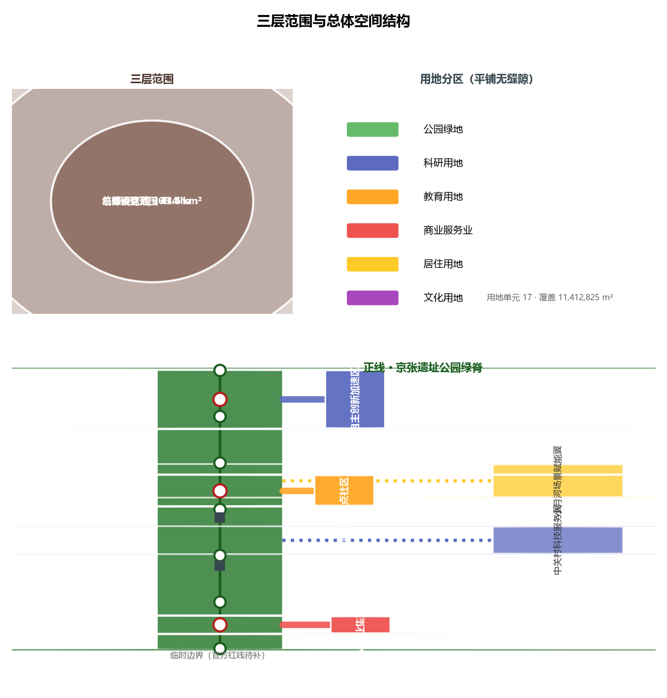
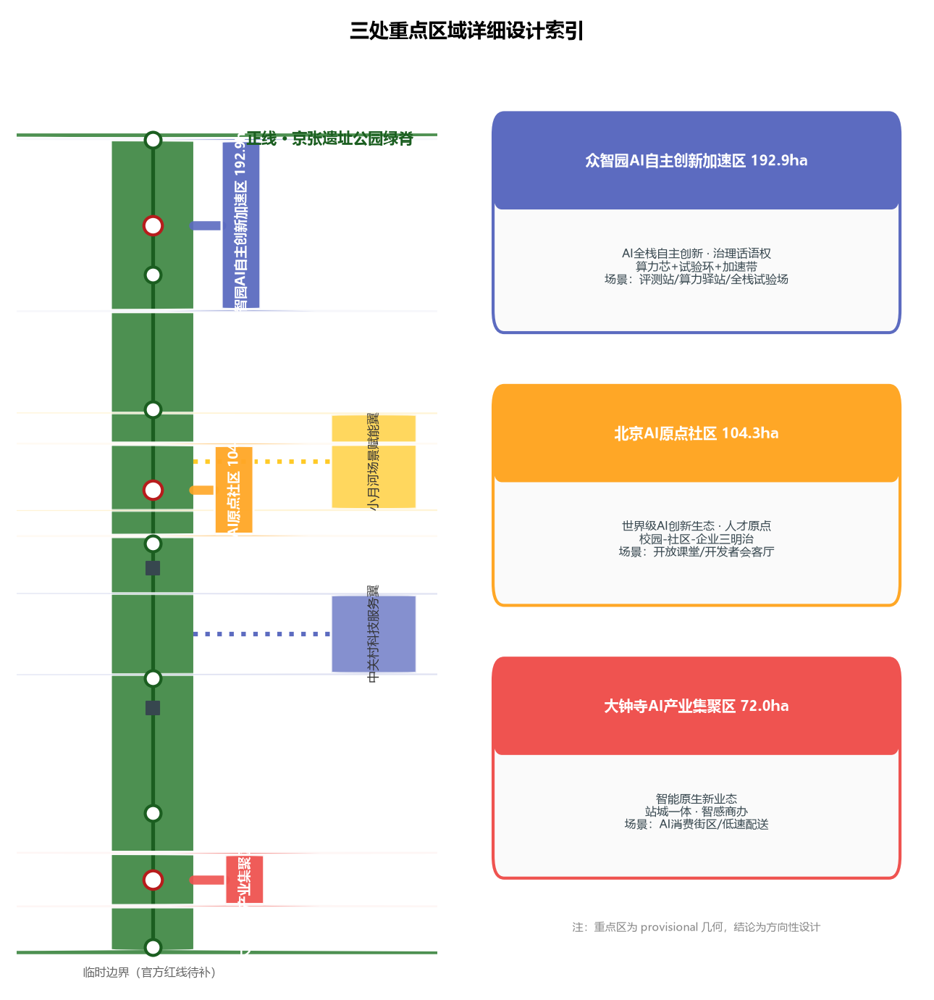
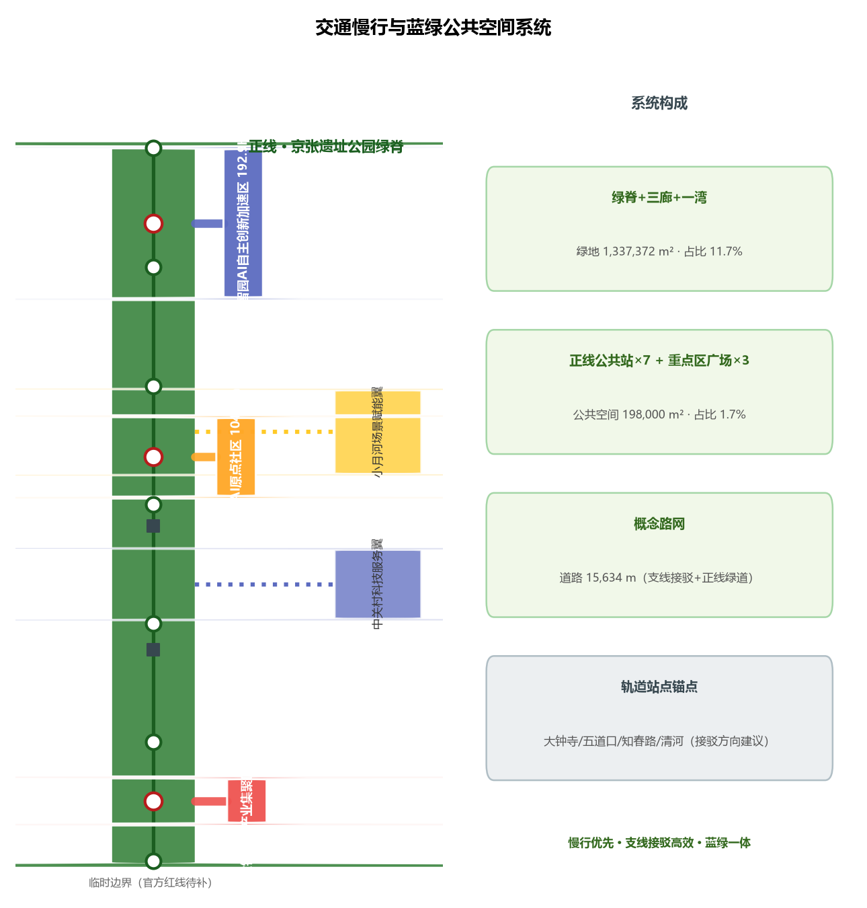

核心指标
总览地图

一正五支：正线为京张遗址公园绿脊，五条支线为众智园、AI原点社区、大钟寺三区与中关村科技服务翼、小月河场景赋能翼两翼。支线既是铁路支线，也是开源世界的分支（branch）——创新像PR一样沿支线生长、在正线上被检验、最终合并回主线。
三层范围

统筹研究范围43.6km²（产业战略）→ 总体设计范围11.4km²（一正五支结构）→ 重点区域368.4ha（三区详细设计）。
重点区域

众智园AI自主创新加速区192.9ha（全栈自主+治理话语权）、北京AI原点社区104.3ha（世界级创新生态）、大钟寺AI产业集聚区72.0ha（智能原生新业态）。
用地分区
17个用地单元平铺覆盖提交边界，无缝隙无重叠；科研、教育、商业、居住与绿地沿支线布局。
交通慢行

正线绿道慢行主脊15.6km概念路网；支线接驳道路+正线横街；轨道锚点：大钟寺/五道口/知春路/清河。
蓝绿公共空间
一脊三廊一湾：绿脊+三支线绿廊+小月河滨水绿廊，绿地133.7ha；公共空间10节点（7正线公共站+3重点区广场）。
建筑
73栋概念建筑、基底44.5万m²，仅表达体量方向，不代表法定建筑面积。
更新项目
近期正线+原点社区→中期众智园+大钟寺→远期两翼；五期分区（phasing.geojson）。
AI 场景
12张场景卡（S01-S12）含3个产业测试验证场景（T01-T03）；5类用户画像；场景-空间-运营映射。
任务覆盖
公告1.3/1.4/1.5全部20项任务 + 智能体任务书agent.1-agent.6 全部覆盖（compliance_matrix.json）。
自检状态
本地自检通过后写入 self_check.json；空间审查：PASS（仅provisional提示）；视觉/专业审查随最终化刷新。
来源
官方公告（2026-05-09）、智能体任务书（2026-05-18）、三区两翼报道（2026-04-03）、海淀1+X+1（2026-03-02）、城市设计管理办法、控规办法、用地分类指南、provisional边界（Issue #846）。
假设
A-CONTROLS-001：控规条件/道路红线/权属/市政/工程约束待官方资料确认；官方边界公布后全量重算。